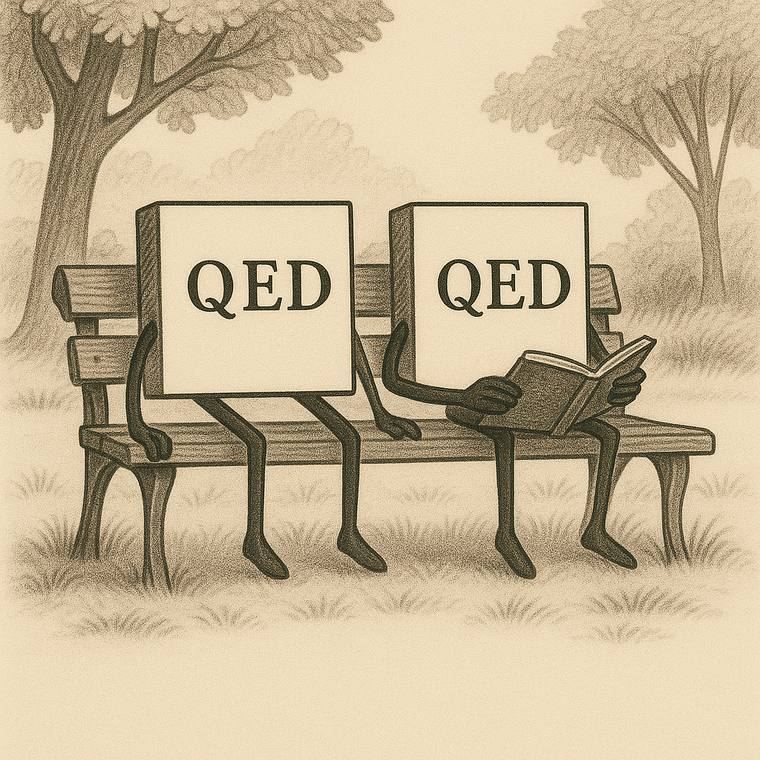

Research-level by design
Problems are chosen by mathematicians active in the field: recent theorems, classical results and conjectures that are still open. No competition puzzles.
Lean 4 · Combinatorics · Graph theory
Research-level mathematics benchmark, verified by Lean.
ProofBench evaluates whether AI systems can generate complete, mechanically checked proofs of meaningful mathematical statements. Its philosophy is simple: progress in AI mathematics should be measured not only by raw performance, but by the ability to reason through deep ideas and formalize expert mathematical insights. By expressing these insights as precise Lean 4 statements, ProofBench enables objective comparison across AI systems and advances reliable proof generation and verification.
Technische Universität Bergakademie Freiberg · Universität Hamburg
Why ProofBench
Competition benchmarks are close to saturation, and informal proofs are expensive to grade reliably. ProofBench takes a different route: research-level problems, exact formal statements and fully automatic verification.
Problems are chosen by mathematicians active in the field: recent theorems, classical results and conjectures that are still open. No competition puzzles.
There is no human grader and no LLM judge. A submission counts only if it compiles against the untouched statement and passes an independent proof checker.
Every formal statement is checked against results that should imply it and consequences it should imply, so mis-formalizations are caught before any model sees them.
Every model runs in the same sealed sandbox with the same tools, budget and session limit, and every run is logged so it can be reproduced.
The problem set
Every problem is a single Lean file with one theorem whose proof is left as sorry. The
collection is anchored in graph theory and reaches into matroids, extremal set theory, number theory
and geometry.
By primary MSC class: 83 graph theory · 8 designs & matroids · 6 extremal combinatorics · 19 other
Browse all 116 problems →Theorem sandwich
One misplaced quantifier can turn a deep conjecture into a trivial exercise, or into a false statement. To catch such slips before any model sees a problem, each statement is bracketed by two independent layers of Lean code.
Upper layer
Key lemmata, or a stronger known result
Some may stay unproved. Proving all of them would solve the problem.
The statement
theorem Pxxx : … := by sorry
Lower layer
Easy corollaries
Each one derived from the statement in Lean.
Evaluation
AI systems are evaluated in one shared harness built on Inspect AI, not inside each vendor’s own agent product, so results stay comparable across models and reproducible over time.
01
Each attempt runs in its own container with Lean, Mathlib and the statement library. No internet, no credentials, no route to reference solutions.
02
A shell, the Lean language server, Python, SageMath and a SAT solver. Web search only in dedicated runs, through one shared provider.
03
Up to ten sessions per problem. Each starts from a clean context and inherits only the current files and a structured handoff note.
04
Lean must compile the untouched statement using standard axioms only. Comparator then rebuilds and replays the proof in isolation.
Open source
The problem statements, the evaluation harness and the HPC sandbox will be released together with the paper. The sandwich layers and reference proofs stay private, so the benchmark keeps its value.
Results
The first evaluation results will be published here together with the paper. An open problem counts as solved when a system proves either the statement or its negation.
| Rank | Model | Web search | Open /32 | Research /68 | Calibration /14 | Total | Cost |
|---|
Landscape
Benchmarks for AI mathematics differ in what they ask for, a final answer or a full proof, and in how the answer is checked. At the research level, formal and proof-based evaluation is still rare.
| Format | Competition | Undergraduate | Graduate | Research |
|---|
More from ProofBench
Sister project
The Ten Challenges comprise the first ten problems of ProofBench, which are parameterized open problems in combinatorics.
Visit Ten Challenges →
Freiberg, autumn 2025
Two weeks, about twenty mathematicians and Lean experts, and a recent research result taken into Lean together. The first real test of the ProofBench method.
Read about the workshop ↓Before asking machines to formalize research mathematics, we wanted to know what it takes for people to do it. For two weeks, research mathematicians and Lean experts worked side by side on one recent result, and the experience shaped how ProofBench builds and checks its problems today.
The workshop centred on a question from infinite graph theory. Call a graph H ubiquitous if every graph that contains n disjoint copies of H as minors, for each finite n, must also contain infinitely many disjoint copies. In 2002 Thomas Andreae conjectured that every locally finite graph is ubiquitous. In 2023 Johannes Carmesin showed that this fails by constructing a counterexample (Journal of Combinatorial Theory, Series B 162).
Carrying that construction all the way into Lean 4 was the shared goal. The argument fills only a few pages on paper, but it rests on infinite graphs, minors and disjoint unions, areas where Mathlib offers little ready-made support.
Participants formed teams that paired combinatorial expertise with Lean experience, and each team took on part of the argument.
As the work progressed, the teams shrank. Small groups moved more easily between the mathematics and its formal verification.
The Lean specialists gradually left their fixed teams and became a shared resource, joining whichever group was stuck.
Along the way the group developed procedures for splitting a complex proof into manageable formalization tasks, and gave the theorem sandwich its first trial.
Even with a strong team, turning a recent research proof into checked Lean code took sustained effort. The gap between a convincing argument and a verified one is real.
Writing Lean statements that say exactly what the mathematics says was the most delicate step. Small slips were easy to make and hard to spot, which is why ProofBench now guards every statement with a theorem sandwich.
Graph theory in Mathlib is still thin, so much time went into basic definitions. Mapping out the proof and its dependencies in advance with a blueprint catches problems early.
The workshop showed that research-level formalization is a workable, and demanding, yardstick for AI systems. It validated the pipeline that ProofBench uses to construct its problems and was the first real test of the theorem sandwich, bringing pure mathematicians, Lean users and machine-learning researchers to the same table.
We are glad to hear from mathematicians and Lean users who would like to take part in, or host, a future ProofBench workshop.
Vaibhav.Bajpai@math.tu-freiberg.deUtku.Okur@math.tu-freiberg.de
Team
ProofBench is an academic initiative of the Institute of Discrete Mathematics and Algebra at Technische Universität Bergakademie Freiberg, together with the Department of Mathematics at Universität Hamburg.
Contribute